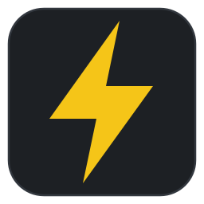

Cargando IEEStudio…
IEEStudio está pensado para pantallas grandes. En el celular funciona, pero es más cómodo en una computadora o tableta.
Entendido
Hay una versión nueva de IEEStudio.
Recargar
Después
IEEStudio necesita JavaScript activado.